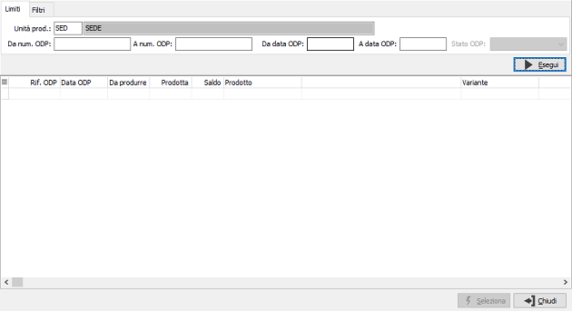
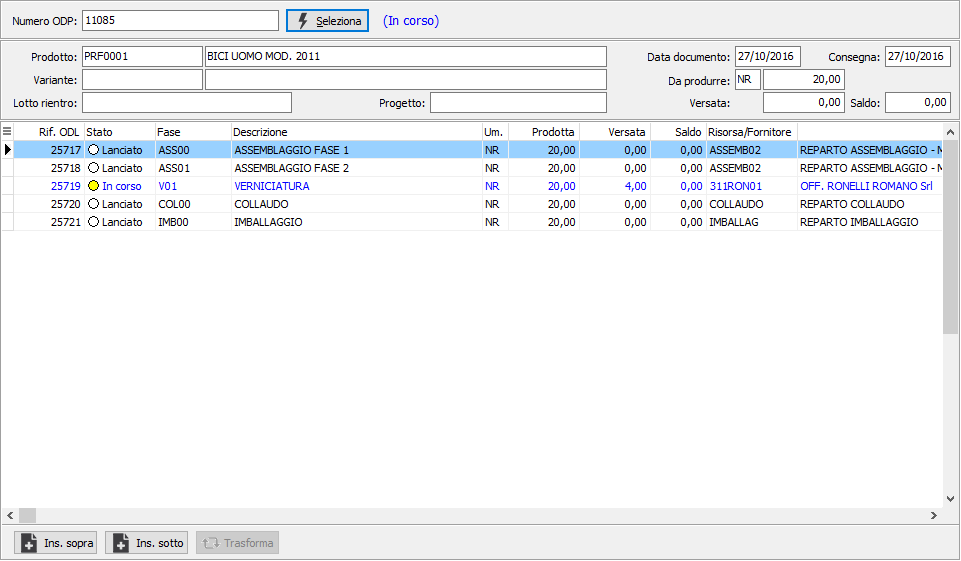
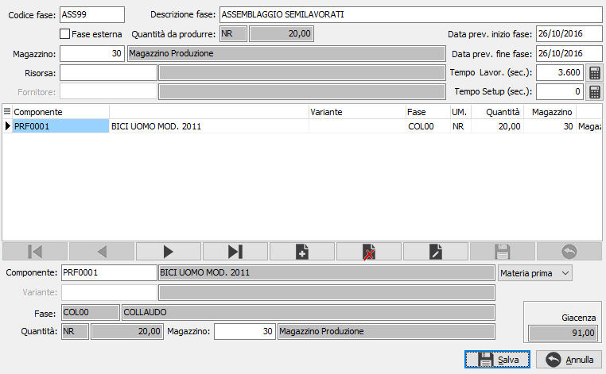
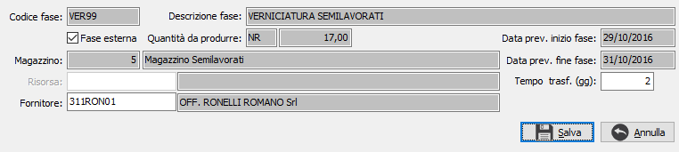
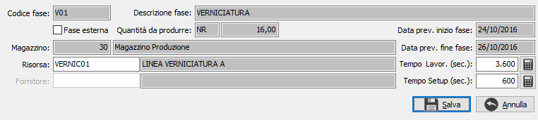
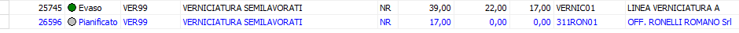

Revisione ciclo ODP

La funzione consente di agire su uno specifico ODP
al fine di aggiungere una o più fasi non previste dal ciclo sia prima,
sia dopo fasi già esistenti consentendo di creare di fatto un ODP “personalizzato”
senza modificare il ciclo standard.
E' possibile selezionare un ODP tramite la finestra di ricerca utilizzando
la funzione di zoom (F9) sul campo numero ODP.
Nei parametri viene richiesta l'unità produttiva con proposta l'unità
produttiva di default valida per l'utente connesso ad OS1; è possibile
solo scegliere l'unità produttiva, se gestite in configurazione le unità
produttive multiple; è possibile specificare un range di ODP e di date
ODP; è presente poi una pagina relativa ai filtri dove è possibile inserire
prodotto, variante e progetto se gestito, in modo da restringere di più
il campo della ricerca. Premendo il pulsante Esegui vengono visualizzati
nella griglia i dati relativi agli ODP trovati corrispondenti ai limiti
ed ai filtri inseriti; gli ODP evasi, se presenti, saranno evidenziati
dal colore grigio chiaro.
Selezionando un ODP dalla finestra di ricerca oppure inserendo il numero
nel relativo campo e premendo il pulsante di selezione sarà visualizzato
lo stato dell'ODP ed i dati relativi; nella griglia saranno mostrati gli
ODL relative alle fasi presenti, in blu quelle esterne; scorrendo le fasi
i pulsanti in basso si accenderanno o meno in base alla possibilità di
inserire o meno una nuova fase prima o dopo alla corrente.
Il pulsante Trasforma si attiva solo per le fasi parzialmente evase
e consente di sdoppiare la fase dando la possibilità di completarla in
maniera opposta rispetto alla parte già evasa; se la fase è interna si
completa come fase esterna oppure viceversa.
E' possibile aggiungere una fase prima della
corrente solo se la corrente è pianificata o lanciata, è possibile inserire
una fase dopo la corrente solo se la corrente è pianificata, lanciata
oppure è l'ultima fase.

Premendo uno dei due pulsanti viene aperta la finestra di inserimento
nuova fase, dove saranno già inseriti in automatico i componenti relativi
alla fase precedente, se presente.

In questa finestra è necessario fornire tutte le informazioni relative
alla nuova fase che può essere interna o esterna in base alla presenza
della spunta sulla casella "Fase esterna"; è necessario inserire
la risorsa associata ed i tempi di lavorazione/setup (per le fasi interne)
oppure il fornitore ed il tempo di trasferimento in giorni (per le fasi
esterne); è possibile inserire anche eventuali componenti aggiuntivi da
utilizzare durante la nuova fase.  Per l'inserimento
dei tempi di lavorazione e setup sono presenti i campi che è possibile
inserire manualmente o tramite il pulsante
Per l'inserimento
dei tempi di lavorazione e setup sono presenti i campi che è possibile
inserire manualmente o tramite il pulsante  che accede
alla finestra di calcolo dei tempi da cui è possibile inserire un periodo
di iniziale ed un periodo finale e premendo Calcola viene rapportato tutto
in ore, minuti e secondi e riportato nei relativi campi sul movimento.
Premendo il pulsante Salva viene generato il nuovo ODL e riportato nella
finestra principale; non sarà possibile rimuovere una fase aggiunta se
non annullando completamente la modifica all'ODP.
che accede
alla finestra di calcolo dei tempi da cui è possibile inserire un periodo
di iniziale ed un periodo finale e premendo Calcola viene rapportato tutto
in ore, minuti e secondi e riportato nei relativi campi sul movimento.
Premendo il pulsante Salva viene generato il nuovo ODL e riportato nella
finestra principale; non sarà possibile rimuovere una fase aggiunta se
non annullando completamente la modifica all'ODP.
Il pulsante Trasforma consente di sdoppiare una fase evasa parzialmente
dando la possibilità di completarla in maniera opposta rispetto alla parte
già evasa (avanzamento già fatto internamente da completare esternamente
oppure viceversa). Il meccanismo, attivato dal bottone Trasforma, crea
un ODL con la stessa fase e con la stessa sequenza dell’ODL originale
e con quantità pari al residuo dell’ODL da trattare; in base alla fase
di partenza vengono richiesti dati differenti, se la fase è interna viene
richiesto fornitore e tempo di trasferimento, altrimenti risorsa e tempi
di lavorazione.


Dopo il salvataggio le fasi appaiono come nell'esempio; la fase di partenza
viene saldata e la fase nuova viene pianificata.

Premendo il pulsante Salva
presente nella Toolbar o il
tasto funzione F10, sarà effettuata la registrazione definitiva.